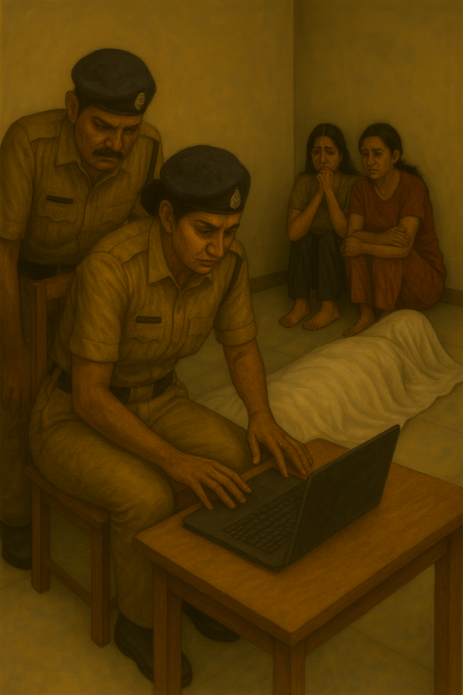

The air in the flat had thickened to the point of suffocation. Every tick of the wall clock sounded louder, echoing against the plaster like a judge's gavel. The girls sat huddled on the sofa—Aditi wringing her fingers raw, Shwetha frozen in silence, her eyes darting nervously between Avni and the door. The constables shifted on their feet, whispering among themselves, waiting for something—anything—to break the stalemate.
Avni leaned back in her chair, expression unreadable, but her gaze was sharp, dissecting every twitch of the girls' faces. Aditi refused to meet her eyes; Shwetha's lips were pressed in a thin, bloodless line. The tension was unbearable.
The door creaked open. The reporting officer entered briskly, clutching a laptop.
"Ma'am, CCTV footage," he announced.
Finally. Something tangible. Avni stood and moved closer, her officers flanking her. The neighbour, who had insisted he'd heard the gunshot, shuffled in behind, craning his neck anxiously.
"What time did you say you heard the shot?" Avni asked, voice level but cold.
"Between 7:30 and 7:45, madam!" the man barked, louder than necessary, as though volume could add credibility.
Avni gestured at the officer. "Scrub to that time frame."

The footage flickered. A grainy image filled the screen—an empty aisle bathed in the yellow wash of the streetlight. Then, slowly, a figure appeared: an old man, stooped, walking the aisle with deliberate steps. All eyes fixed on the screen, holding their breath, waiting for him to step through Saraswati's doorway.
But he didn't. He stopped at the next house—his own—and disappeared inside.
Avni's lips tightened. Around her, officers released sighs of irritation. Even the neighbour muttered, embarrassed.
"Keep watching," Avni ordered. Her instincts screamed this was not so simple.
The minutes crawled. Static hissed. Then suddenly—
"There!" a constable cried, jabbing the screen. "At the door!"
The frame froze: the old man, now unmistakably at Saraswati's threshold, standing as though he had materialized out of thin air.
Avni's breath caught. Her pulse hammered. She leaned in, eyes narrowing.
"How the hell…?" she whispered. Then louder: "I didn't see him walk the aisle. Did anyone see him cross?"
No one answered. The room's atmosphere shifted from tense to terrified. Fear rippled silently—if the officers themselves were unnerved, something was very wrong.
Avni turned, fury simmering. She strode across the room and loomed over Aditi.
"Who is that man? How did he get here?" Her voice cracked like a whip.
Aditi broke down. "We don't know!" she sobbed. "You see—we're not lying. Shwetha and I were talking… Saraswati was on the laptop… and then this man just—just walked in."
Shwetha nodded silently, her knuckles white against her knees.
Avni's jaw clenched. She turned away sharply, pacing. Their words replayed in her head, looping like static—chatting, laptop, the man walking in. Her mind snagged on one detail: the laptop.
She stopped cold. Then crossed to the desk and flipped it open. The screen glowed to life.
The last search sat there, mocking her:
"VIJENDRA PONAPPA."
Avni froze. Recognition stabbed her memory— "Professor Ponappa, the keynote speaker at the academic summit last week. I had stood guard outside the hall as he delivered his address. Why on earth was Saraswati searching him in her final hours?", Avni thought to herself.
Before Avni could process, her walkie crackled.
"Ma'am, facial ID confirms victim identity. Dr Saraswati Sheshadri. Theoretical physicist. Missing since… 1995."
The words hollowed the room. Nineteen ninety-five? Avni's scalp prickled as if ice water had been poured over her head.
The device crackled again.
"Ma'am, we have her missing-person report on file. Dated March 29, 1995."
Avni lifted the walkie slowly to her ear. Her officers crowded closer.
The report was read aloud, the voice trembling slightly:
'My wife Saraswati travelled time on the 15th of March 1995. She has not come back. I am filing this report to let everyone know she is not missing but somewhere in the future… or the past. Please publish this widely, so if she is ever identified, I may see her again.'
Silence swallowed the room.
Avni blinked, her throat dry. Her mind reeled. Travelled time? Her grip on the walkie tightened.
The voice on the walkie continued: The officer on the other side added
"And… we've located her husband. Madan Sheshadri. He has been informed. He is en route."
Gasps rippled. One officer made the sign of the cross. Another muttered a prayer under his breath.
Avni ignored them. Her eyes dropped back to the laptop, hands moving with mechanical calm. She scrolled through the browser history.
A web of links appeared—obscure forums, fringe science blogs, shadowy chatrooms. All filled with fragments of a single obsession: an experimental device whispered about as the Chronoblade. Allegedly the work of professors at the Indian Institute of Science.
Avni's lips moved soundlessly as she read. Her pulse thudded harder with each click. One headline froze her:
"Missing Physicist Linked to Solar-Eclipse Experiment: 1995 Mystery Deepens."
Another click. Wikipedia opened, only to redirect to a stub entry:
Dr Saraswati Sheshadri, theoretical physicist. Disappeared 15 March 1995 during a total solar eclipse. Presumed dead.
Always the same date. The year hammering itself into Avni's skull: 1995.
At that exact moment, a constable appeared breathless at the door.
"Madam—the husband's car just entered the compound."
Avni snapped the laptop shut. The slam echoed like a gunshot. Her mind buzzed with fractured theories, each one wilder than the last.
"Bring him straight up," she ordered, her voice steel. "And keep that laptop powered. I want every file copied, every screenshot taken."
As the officers scrambled, Avni stood motionless, breathing deep.
She was about to face Madan Sheshadri.
To the world, a grieving widower.
To her gut, perhaps the accomplice of a time traveller.